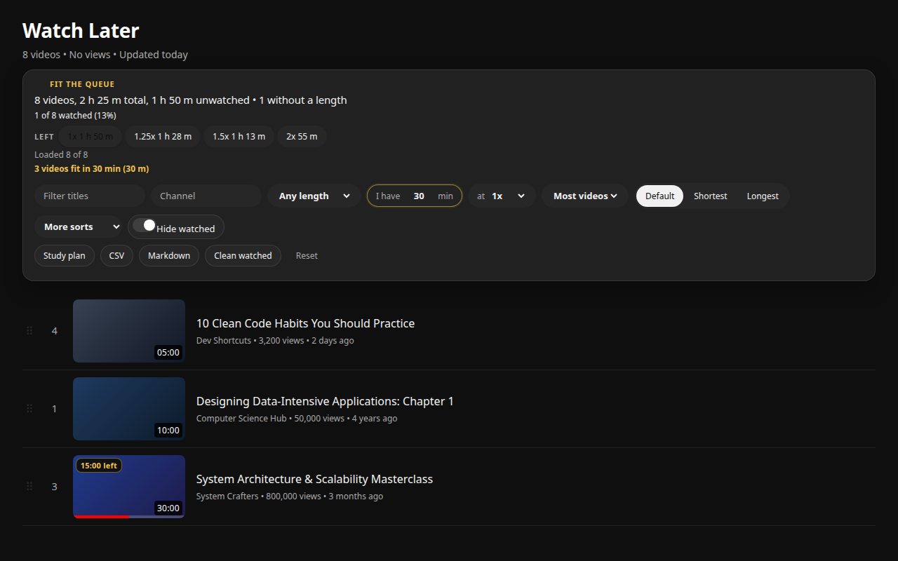

Fit the Queue
A browser extension that adds a bar above any YouTube playlist, Watch Later included. It shows the time still left at 1x, 1.25x, 1.5x, and 2x, and which videos fit in the minutes you have. You can sort and filter, export the list, and split a course across days. Formerly Playlist Lens.

Source on GitHub · Privacy policy · Ko-fi
Unofficial, not affiliated with YouTube.